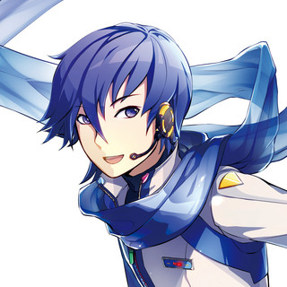
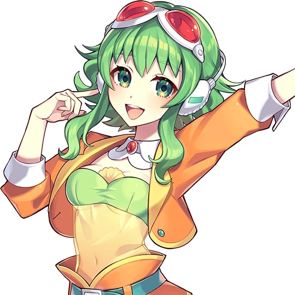

What is VOCALOID?
Vocaloid (often stylized as VOCALOID) is a music making software originally released in 2004. It uses synthesized voices to "sing" user-inputed lyrics and melody. The voices used are derived from real-life voice actors and singers and sold in packages known as voice banks. The voice banks are marketed under their own characters and are also referred to as Vocaloids!
Blessing by halyosy, Performed at a Vocaloid Concert (Magical Mirai)
The CV Series
A common misconception is that Hatsune Miku is the first Vocaloid. The actual first Vocaloids were Leon, Lola, KAITO, and MEIKO. Leon and Lola were meant for English songs, while KAITO and MEIKO were meant for Japanese songs. However, following the release of Vocaloid 2, a series called the Character Vocal Series (AKA CV Series) began. This series of voicebanks are some of the most popular and well-known Vocaloids.
- Hatsune Miku

- First in the CV Series
- Associated with an aqua color
- Loves leeks
- Voice provided by Saki Fujita
- A song using Miku
- Kagamine Rin & Len
- Released as a pair, meant to be mirrors of each other
- Associated with the color yellow
- Rin loves oranges, Len loves bananas
- Voice (for both Rin and Len!) provided by Asami Shimoda
- A song using Rin
- A song using Len
- A song using Rin and Len
- Megurine Luka
- The third CV
- Associated with the color pink
- Loves fish
- Voice provided by Yu Asakawa
- A song using Luka
Other Vocaloids
While the CV Series consists of some of the most popular Vocaloids, there are hundreds of voice banks out there! Here are some examples of other Vocaloids.
- KAITO
- Released for Vocaloid 1 as a counterpart for MEIKO (unlike Rin and Len, KAITO and MEIKO were released separately)
- Associated with the color blue
- Likes ice cream
- Voice provided by Naoto Fuga (who often posts about KAITO on his Twitter)
- A song using KAITO
- MEIKO
- The counterpart for KAITO
- Associated with the color red
- Likes alcohol
- Voice provided by Meiko Haigo
- A song using MEIKO
- Gumi
- Also called Megpoid, GUMI Megpoid, or Megpoid GUMI
- Associated with the color green
- Likes carrots
- Voice provided by Megumi Nakajima
- A song using Gumi
Vocaloid Popularity
Now that Vocaloid is 20 years old, many believe that its peak popularity was in the early 2000s, when it was first released. This visualization uploaded by Tableau Public user Thanh Hien gives an insight into the current popularity status of Vocaloid music.

Further Listening
I love Vocaloid music, as you can tell from the whole page I made about it. Here's my personal playlist if you're interested. It's only available on Apple Music; sorry to potentially dissappoint.
Back to Top